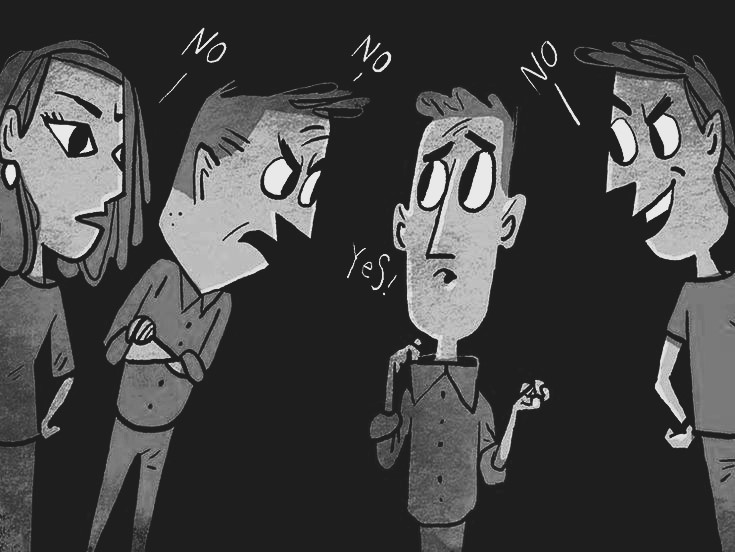

Individuals engage in bullying behavior because of a lack of empathy which results in various negative consequences. Without this, it can lead an indifference toward the feelings and well-being of others. People with this deficiency may struggle to comprehend how their actions impact others emotionally. Sometimes, they may even dehumanize others, regarding their targets as objects, or as unworthy of respect and kindness. Seeking attention and exerting power over others are inclined to bullying behavior, and the ones who lack empathy are more inclined to act on aggressive and hurtful impulses. Their deficiency in empathy can make it easier for them to engage in tactics such as emotional manipulation, humiliation, or harassment, all without experiencing the typical feelings of remorse or guilt for their actions.
Insecurity and low self-esteem can lead to bullying because individuals may seek power and control over others. They use this to boost their self-esteem by putting others down, conforming to peer expectations that encourage bullying, projecting their insecurities onto victims, deflect attention from their own issues, externalizing internal turmoil, or using bullying to validate self-worth. While these factors may contribute to bullying, it is crucial to emphasize that bullying is unacceptable, and individuals engaging in it should be held accountable. Addressing the issue involves intervention, support, and efforts to promote positive self-esteem and a culture of respect and empathy.
Bullying behavior of children might also come from a negative family and home environment . A toxic household that promotes aggressive behavior, a lack of socioeconomic stressors, and a lack of emotional support and the like, influence children to engage in bullying. To address this issue, it requires intervention, support, education, and awareness to help break the cycle of bullying in difficult home environments.
Peer pressure also leads to bullying when adolescents may conform to bullying behavior to fit in a group, gain acceptance, or avoid becoming targets themselves. The fear of exclusion and the desire for popularity can drive this conformity. Additionally, peer pressure can reinforce bullying and make it seem normal within a group, further distancing individuals from the emotional consequences of their actions. Creating an environment that promotes empathy, tolerance, and ethical decision-making, along with educating individuals about the consequences of bullying and encouraging bystander intervention is truly significant.
Mental health issues can contribute to bullying behavior in various ways. Emotional dysregulation, reduced empathy, social isolation, and maladaptive coping mechanisms may lead individuals with mental health conditions to engage in bullying. Attention-seeking, perceived threats, impulsivity, and externalizing pain are other potential factors. However, not all individuals with mental health issues become bullies and many are more likely to be victims of bullying addressing bullying related to mental health requires a sensitive approach including mental health support, education, and awareness to reduce stigma.
A lack of education and awareness about bullying leads to the under recognition of bullying behaviors of individuals, such as the perpetuation of stereotypes and prejudices, failure to intervene, the inability to identify warnings, the normalization of harmful behavior, bystander inaction, ignorance about cyber bullying, low empathy, and the absence of anti-bullying policies. Promoting education and awareness about its various forms, consequences, and prevention strategies can prevent negative behavior and further bullying. This helps create a culture where bullying is recognized, condemned, and actively prevented.